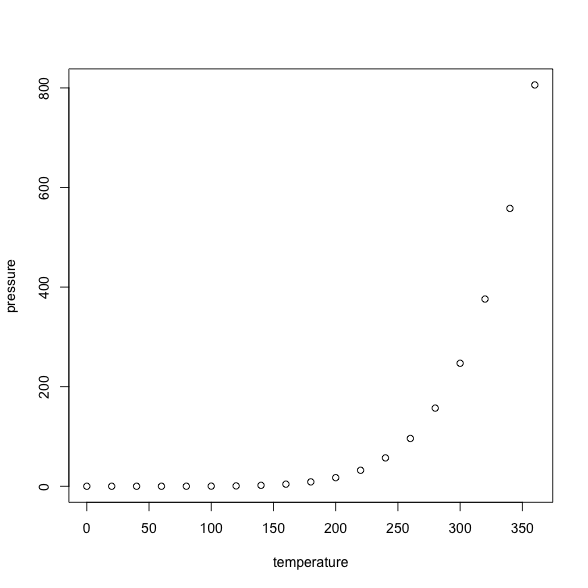

This post shows case one example of new package – litedown from Yihui Xie. Please refer to the documentation for more details.
1 Including Plots Here
You can also embed plots now, for example:
plot(pressure)

library(tidyverse)
#> ── Attaching core tidyverse packages ──────────────────────── tidyverse 2.0.0 ──
#> ✔ dplyr 1.1.4 ✔ readr 2.1.5
#> ✔ forcats 1.0.0 ✔ stringr 1.5.1
#> ✔ ggplot2 3.5.1 ✔ tibble 3.2.1
#> ✔ lubridate 1.9.3 ✔ tidyr 1.3.1
#> ✔ purrr 1.0.2 ── Conflicts ────────────────────────────────────────── tidyverse_conflicts() ──
#> ✖ tidyr::extract() masks rstan::extract()
#> ✖ dplyr::filter() masks stats::filter()
#> ✖ dplyr::lag() masks stats::lag()
#> ℹ Use the conflicted package (<http://conflicted.r-lib.org/>) to force all conflicts to become errors
Below is not a code chunk but verbatim content
inside a fenced code block (with four backticks).
```{r}
1 + 1
```
Inline code expressions like `{r} 1+1` are not
parsed, either.